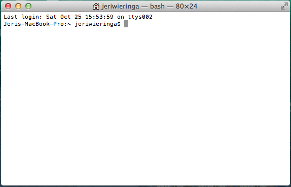

Overview for Coaches
Welcome to being a coach for a DH Bridge workshop! This document will orient you to the goals and objectives for the day (and beyond), how the tutorials have been scaffolded, and the places where your expertise will be needed to guide participants.
Goals and Objectives
Coaches will need to:
- Be mindful of the obstacles that make it difficult for persons from underrepresented groups to learn to code, and be respectful of particpants' efforts to learn.
- Foster collegial interaction between participants in their group, and encourage participants to collaborate and help each other when possible.
- Facilitate participants' forays into computational thinking by highlighting the relationships between data, content, and questions.
- Encourage participants to avoid self-deprecating/apologetic language (I'm not sure if I'm smart enough, I'm not very good with technology, etc.).
Tips for the Day
- Not all questions have solutions, errors will happen, and that's ok. Talk through participants' results, and move them toward forming their own questions to troubleshoot.
- If a group is progressing quickly through the tutorials, have them explain back what the different lines of code are doing and/or complete the Bonus Challenges on the relevant tutorials.
- There shouldn't be any copying/pasting of the code.
- Only 1 folder should be used for the entire workshop.
- Ask before taking over a participant's machine to demonstrate or fix a problem, and only do so if absolutely necessary.
- To make things easy on everyone, the following terminology will be used consistently throughout the day:
Terminal and Powershell = Terminal Directories and Folders = Folders For Mac/Windows term translation: http://www.dummies.com/how-to/content/comparing-common-windows-terms-with-mac-terms.html
- Capitalization is crucial in Windows Powershell, so if you see participants running into problems it's always a good idea to check there.
Full Day Schedule
Note: the timeblocks are suggestions and will depend on the progress of your group. The first half of the day is primarily concerned with introducing thinking computationally: how a computer processes information locally and with other computers. The second half of the day builds on this foundation to address computational thinking about humanities data: how to utilize computation to ask questions and work with the kinds of data that interest humanities scholars.
9:30-10:20a Welcome and Setting Up the Learning Environment: goals and objectives for the day, introductions within small groups. Coaches' Project Demonstrations: current projects and problems
10 Minute Break
10:30-Noon: Modules 1-5
LUNCH
1:00-2:30p: Modules 6 - 8
10 Minute Break
2:40-4:00p: Modules 9 - 11
4:00-5:00p: Modules 12 - 13
5:00-5:30: Wrapup (recap the day and tips for continued learning)
5:30: Decompressing and socializing
Tutorial Modules
- Installation
- Module 1
- Module 2
- Module 3
- Module 4
- Module 5
- Module 6
- Module 7
- Module 8
- Module 9
- Module 10
- Module 11
- Module 12
- Module 13
Installation
Check to make sure that participants have the following installed and ready to go:
- Python 2.7
pip- Text Editor: work with participants to set TextWrangler as the default text editor for Mac users. It's not an issue for Windows users because the commands specify starting Notepad++ each time.
- Chrome browser
If possible, please have participants pin the text editor and Chrome to their Dock (Mac)/Taskbar (Windows), or at least have them easily accessible.
One
(To be done with the full group)
Learning Checks:
- After your group members have all created their "dhb_awesome" folder have them find where it lives on their computer through Finder/My Computer. Have them compare the directory path with what they did in Terminal to ensure they can see that they are creating files and folders on their local machine.
Two
Start with the DPLA interface in the browser and search for "cooking". Have your group read what's going on in the URL. Filter the number of items displayed using the GUI's filters. How did the URL change? What's the syntax?
Learning Checks:
- Have them talk through the API request URL to reinforce understanding of the structure of the request.
- Review how JSON stores data items as objects and how it displays those objects.
Three
Questions to keep in mind throughout the module:
Learning Checks:
- Make sure participants are clear on difference between Python Interactive Shell and Terminal.
- Terminology check: string, variable, array/list
Four
Questions to keep in mind throughout the module:
Learning Checks:
- Constructing additional queries: highlight the questions that would motivate the choice of different commands and filtering of results.
- See if there are any general questions about APIs and the documentation used in the module.
Five
Learning Checks: programming languages and libraries
-
Mapping Exercise #1: have participants diagram the following, similar to the API exercise from earlier in the day: -High-level programming languages (like Python) enable you to write commands for your computer in something that approximates English. Those commands are then translated down to machine language, executed by the hardware, and the results are translated back to generate the desired output. Your computer is constantly processing commands from the applications on your machine in multiple programming languages. Just like those applications, you can use the terminal interface to send commands to your computer. -Discuss everyone's diagrams and make sure the concepts are clear.
-
Mapping Exercise #2: have participants diagram the following, similar to the API exercise from earlier in the day: -A Python module or library is a bundle of code, including variables and functions (defined processes), that does a particular task. Many Python modules already exist out in the world, ready to be used, and new ones are developed by programmers all the time. Python scripts, which combine these modules with additional python commands, give the computer new, and more complicated, tasks that can be completed. -Discuss everyone's diagrams and make sure the concepts are clear.
Six
Before your group jumps into the code-heavy part of the module, start off with the quick review of how script files should be organized. There will also be a handout for participants to reference as they continue through the modules. Participants may be tempted to gloss over this part, but make sure they take the time to get the format down. 1. load libraries 2. set variables to be used throughout the script 3. define all functions 4. calls/commands to execute the functions
Terminology related to functions: from now on the tutorials will heavily use new phrases to describe how the functions work in relation to the data. These phrases are part of programming vernacular, and so they're not jarring to participants, here are some basic definitions to maintain consistency: 1. call: to execute 2. declare/set: create a new function 3. pass: to run data through the function/loop
Learning Checks: 1. Have a quick discussion about the merits of commenting out versus deleting lines 2. Verify that participants understand setting variables and how they can hold lists (an empty list so far). 2. Group challenge "for loop" exercise: check that the participants have a solid grasp on the function and purpose of a "for loop".
Seven
Learning Checks: 1. Review and explain in a group discussion: how functions can be combined to solve problems, with the example of the two functions written so far and how they work together. 2. Review what "append" does. 3. Group challenge: talk through the functionality and uses for a "for loop"
Eight
Learning Checks: 1. Group challenge: along with talking through how a "while loop" works, also review why the "while loop" is added into the function where it is.
Nine
Questions for the participants to discuss/keep in mind throughout the module: 1.
Learning Checks: 1. The value of working locally: writing the search results to a JSON file gives the flexibility for working with a large collection of files on a local machine without having to constantly hit the DPLA (or any other API servers) and to find patterns that we could not find using the online interface for the DPLA's holdings. 2. When to use "append": writing inside a loop, which allows the comupter to add the information it grabs to the end of the file rather than overwriting what's there each time.
Ten
Questions for the participants to discuss/keep in mind throughout the module: 1. Are there other data fields to include that would help address the research question? 2. What other research questions can you ask of this data?
Learning Checks: 1. Dealing with the realities of messy data: pristine datasets are extremely rare. In our example, the "cooking" data features many items that don't have information for the three fields that we're focusing on. 2. Open your "text_results.txt" file in TextWrangler/Notepad++ and scroll through what was saved. What do you notice? What information is/isn't there? What kinds of hypotheses can you make based on these results?
**We anticipate this will be as far as participants can get in one day without getting too frustrated or burned out. If that's the case, encourage them to talk through what they've already done, clarify parts that are still mysterious/confusing, and/or go back to the earlier modules and work through with different search terms and parameters. They can also do the activity posed as a Learning Check in Module 13.
Eleven
Questions for the participants to discuss/keep in mind throughout the module: 1. How is the script parsing the text data? 2. What are the benefits and limitations of breaking the data into chunks in this way? 3. How would you speak to how you as the researcher have shaped this dataset?
Learning Checks: 1. Words, sentences, tokens: what is a token? 2. Collocations and concordances: what are they doing? what analytical value does each have for the research question at hand and for your own work?
Twelve
Questions for the participants to discuss/keep in mind throughout the module: 1. How does the results generated by the text mining script compare to your own hypotheses? 2. What kinds of research projects and questions benefit from this approach?
Learning Checks: 1. Stopwords: what makes up these lists? how does one need to account for different stopwords based on the research at hand, language, corpus, etc.? 2. Encourage participants to checkout the documentation for NLTK to get a better sense of what else it can do.
Thirteen
Learning Checks: 1. Have participants pull out their diagrams of Terminal, API, and programming languages and make any necessary revisions based on what they've learned throughout the day.
Looping through the Pages
In this module, we will learn:
- To use a "while loop" and "counter"
We're getting there! We have a function to gather all of the search results on any given page. We now need a way to work systematically through all of the pages available.
To do that, we will add another loop to our "pull_records" function that allows us to move through more than one page of search results.
1. Introducing the While Loop
The "for loop" allows us to do something to each item in a list. The "while loop" is a powerful tool that tells the computer to continue doing something as long as some criteria is true. We can use the "while loop" and a "counter" to work through all of the pages of search results.
To use a while loop, let's look again at our "pull records" function.
1 2 3 4 | def pull_records(pages, end, size):
paged_search = dpla.search('cooking',fields=['sourceResource'], page_size=size, page=pages)
# print paged_search.items[2]
save_each(paged_search)
|
Remember, "pages" stands for the first page and "end" stands for the last page of search results we want. We want this function to run for every page of search results. In other words, if the page number is less than or equal to the total number of pages available, we want to get the search results from that page. Once we hit the end, we want to stop.
To write this logic into our existing function code, we will add:
1 | while(pages <= end): |
so that our function now looks like this:
1 2 3 4 5 | def pull_records(pages, end, size):
while(pages <= end):
paged_search = dpla.search('cooking',fields=['sourceResource'], page_size=size, page=pages)
# print paged_search.items[2]
save_each(paged_search)
|
Can you see the problem with our current function? As it currently stands, "pages" is always less than "end" because it never increases. This means we would get stuck in an "infinite loop" if we tried to run the code right now – don't run the code at this point!
To avoid the "infinite loop", we need to increase the value of "pages" each time we work through the loop. We can do this by overwriting the value of "pages" to be "pages + 1".
Add "pages = pages +1" after save_each(paged_search) like this:
1 2 3 4 5 6 | def pull_records(pages, end, size):
while(pages <= end):
paged_search = dpla.search('cooking',fields=['sourceResource'], page_size=size, page=pages)
# print paged_search.items[2]
save_each(paged_search)
pages = pages + 1
|
Let's also add a print command to check that things are working as we expect. Above pages = pages + 1 add:
1 | print "finished page " + str(pages) |
Our file should now look like this:
1 2 3 4 5 6 7 8 9 10 11 12 13 14 15 16 17 18 19 20 21 22 23 24 25 | # Load Libraries
from dpla.api import DPLA
# Set Variables
dpla = DPLA('Your-Key-Here')
# result = dpla.search('cooking', fields=['sourceResource'], page_size = 50)
all_records = []
# Define Functions
def pull_records(pages, end, size):
while(pages <= end):
paged_search = dpla.search('cooking',fields=['sourceResource'], page_size=size, page=pages)
# print paged_search.items[2]
save_each(paged_search)
print "finished page " + str(pages)
pages = pages + 1
def save_each(n):
for each in n.items:
all_records.append(each)
# Make Function Calls
# print result.items[1]
pull_records(2, 3, 50)
print all_records[30]
|
Let's test our function on a subset of the pages. Change pull_records(2, 3, 50) to pull_records(2, 5, 50) and change print all_records[30] to print all_records[150]
Save and run in Terminal.
Group Challenge:
Go back to your pen and paper and diagram a "while loop".
Save Results to a File
We are almost there! We have been creating some interesting data on the word frequencies within the description fields. But so far, all of our results are stuck in Terminal, which makes it difficult for us to reuse them. So for this final module, we will write out the results of our count to a CSV (comma separated value) file.
Create a New CSV File
As we did when we wrote our JSON results, we will start by telling Python to open a CSV file and assign to a variable.
Currently our script should look like this:
1 2 3 4 5 6 7 8 9 10 11 12 13 14 15 16 17 18 19 20 21 22 23 24 25 26 27 28 29 30 31 32 33 34 35 36 37 38 39 40 | # Import Libraries
import nltk
from nltk.corpus import stopwords
from nltk import word_tokenize
from nltk.probability import *
# Set Variables
with open('text_results.txt, 'r') as file:
cooking_text = file.read().decode('utf8')
cooking_tokens = word_tokenize(cooking_text)
text = nltk.Text(cooking_tokens)
# Load in Stopwords Library
stopwords = stopwords.words('english')
word_set = []
# Define Functions
def normalize_text(text):
# Work through all the words in text and filter
for word in text:
# Check if word is a word, and not punctuation, AND check against stop words
if word.isalpha() and word.lower() not in stopwords:
# If it passes the filters, save to word_set
word_set.append(word.lower())
return word_set
# Make Function Calls
#print cooking_text[0:20]
#print cooking_tokens[0:10]
#print text.concordance('economics')
#print text.collocations()
#print text.similar('Pot')
normalize_text(text)
fd = FreqDist(word_set)
print fd.most_common(200)
print fd.hapaxes()
|
To create CSV files, we need to import the csv library, which is preinstalled, but not preloaded in Python. To do that, add import csv to our list of libraries at the top of the file.
1 2 3 4 5 6 | # Import Libraries import nltk from nltk.corpus import stopwords from nltk import word_tokenize from nltk.probability import * import csv |
Now, we can create our CSV file right after the line where we opened the JSON file. CSV files open a little differently than text files, in that we open the file with a "writer" helper.
1 2 3 4 5 | # Set Variables
with open('text_results.txt', 'r') as file:
cooking_text = file.read().decode('utf8')
file = csv.writer(open('word_frequencies.csv', 'wb'))
|
Now, at the end of our file, we can save the key(the word) and the count(the frequency) as two columns in our CSV file. If you did the graphing challenge, be sure to comment out fd.plot(50,cumulative=False) as well. The plotting function and the write csv functions don't work well together.
1 2 | for key, count in fd.most_common(200):
file.writerow([key, count])
|
The final product should look like this:
1 2 3 4 5 6 7 8 9 10 11 12 13 14 15 16 17 18 19 20 21 22 23 24 25 26 27 28 29 30 31 32 33 34 35 36 37 38 39 40 41 42 43 44 45 46 47 | # Import Libraries
import nltk
from nltk.corpus import stopwords
from nltk import word_tokenize
from nltk.probability import *
# Set Variables
with open('text_results.txt, 'r') as file:
cooking_text = file.read().decode('utf8')
file = csv.writer(open('word_frequencies.csv', 'w'))
cooking_tokens = word_tokenize(cooking_text)
text = nltk.Text(cooking_tokens)
# Load in Stopwords Library
stopwords = stopwords.words('english')
word_set = []
# Define Functions
def normalize_text(text):
# Work through all the words in text and filter
for word in text:
# Check if word is a word, and not punctuation, AND check against stop words
if word.isalpha() and word.lower() not in stopwords:
# If it passes the filters, save to word_set
word_set.append(word.lower())
return word_set
# Make Function Calls
#print cooking_text[0:20]
#print cooking_tokens[0:10]
#print text.concordance('economics')
#print text.collocations()
#print text.similar('Pot')
normalize_text(text)
fd = FreqDist(word_set)
print fd.most_common(200)
#print fd.hapaxes()
#fd.plot(50,cumulative=False)
# Print results to a CSV file
for key, count in fd.most_common(200):
file.writerow([key, count])
|
You can open your CSV file using Terminal by typing or by looking within your "dhb_awesome" directory:
1 | open word_frequencies.csv |
The file will most likely open in Excel or a similar program.
Look over your results. What patterns strike you as interesting? As expected? As unexpected? What additional questions do these word frequencies raise? Now that you have this data, what additional information do you need to know to interpret the patterns we see here?
Analyzing a Subset of the Data (Part 2)
In this module we will learn to:
- normalize our text
- use the Frequency Distribution library to find patterns in our text
1. Normalizing the text
While we can get a lot of information from the entirety of the text, we can also find additional patterns once we do what is called "normalizing" the text. This entails removing all of the punctuation marks and transforming all the words to lower case. It also involves removing the small connection words such as "the" and "a", which are very common in a text, but carry less semantic meaning than nouns, verbs, and adjectives.
To clean up the text, we need to work through each word and and run it through a series of checks or filters.
Open your "text_mining.py" file. First, comment out print text.similar('Pot'). Next, let's create a new function that normalizes the text:
1 2 3 4 5 6 7 8 9 10 | # Define Functions
def normalize_text(text):
# Work through all the words in text and filter
# Make Function Calls
#print cooking_text[0:20]
#print cooking_tokens[0:10]
#print text.concordance('economics')
#print text.collocations()
#print text.similar('Pot')
|
To work through the words, we can use a new "for loop" and save all of the approved words into a new array named "word_set". Create your new array at the end of the "Set Variables" section.
1 2 3 4 5 6 | word_set = []
# Define Functions
def normalize_text(text):
# Work through all the words in text and filter
for word in text:
|
First, for each word, let's check if it is alpha-numeric:
1 2 3 4 5 6 7 8 | word_set = []
# Define Functions
def normalize_text(text):
# Work through all the words in text and filter
for word in text:
# Check if word is a word, and not punctuation
if word.isalpha()
|
Next, let's check the word against the NLTK collection of stopwords. First, let's load in the NLTK stopwords and assign them to the variable "stopwords":
1 2 3 4 5 6 7 8 9 10 11 12 13 14 15 16 | # Import Libraries
import nltk
from nltk.corpus import stopwords
from nltk import word_tokenize
# Set Variables
with open('text_results.txt', 'r') as file:
cooking_text = file.read().decode('utf8')
cooking_tokens = word_tokenize(cooking_text)
text = nltk.Text(cooking_tokens)
# Load Stopwords
stopwords = stopwords.words('english')
word_set = []
|
Next, we need to transform each word to lower-case, because the stopwords list won't catch the uppercase words. We do this by adding .lower() to word as we check the words against the "stopwords" collection.
1 2 3 4 5 6 7 8 9 | word_set = []
# Define Functions
def normalize_text(text):
# Work through all the words in text and filter
for word in text:
# Check if word is a word, and not punctuation, AND check against stop words
if word.isalpha() and word.lower() not in stopwords:
# If it passes the filters, save to word_set
|
Finally, we will add those words that pass through the filters to the "word_set" list and tell the function to return the whole list once it is finished.
1 2 3 4 5 6 7 8 9 10 11 | word_set = []
# Define Functions
def normalize_text(text):
# Work through all the words in text and filter
for word in text:
# Check if word is a word, and not punctuation, AND check against stop words
if word.isalpha() and word.lower() not in stopwords:
# If it passes the filters, save to word_set
word_set.append(word.lower())
return word_set
|
The last step is to call our "normalize_text" function and pass in our text.
1 2 3 4 5 6 7 8 | # Make Function Calls
#print cooking_text[0:20]
#print cooking_tokens[0:10]
#print text.concordance('economy')
#print text.collocations()
#print text.similar('Pot')
normalize_text(text)
|
Well done! We're now ready to calculate word frequencies using the Frequency Distribution library.
2. Get Word Frequencies
Our Python file should now look like this:
1 2 3 4 5 6 7 8 9 10 11 12 13 14 15 16 17 18 19 20 21 22 23 24 25 26 27 28 29 30 31 32 33 34 35 | # Import Libraries
import nltk
from nltk.corpus import stopwords
from nltk import word_tokenize
# Set Variables
with open('text_results.txt', 'r') as file:
cooking_text = file.read().decode('utf8')
cooking_tokens = word_tokenize(cooking_text)
text = nltk.Text(cooking_tokens)
# Load in Stopwords Library
stopwords = stopwords.words('english')
word_set = []
# Define Functions
def normalize_text(text):
# Work through all the words in text and filter
for word in text:
# Check if word is a word, and not punctuation, AND check against stop words
if word.isalpha() and word.lower() not in stopwords:
# If it passes the filters, save to word_set
word_set.append(word.lower())
return word_set
# Make Function Calls
#print cooking_text[0:20]
#print cooking_tokens[0:10]
#print text.concordance('economy')
#print text.collocations()
#print text.similar('Pot')
normalize_text(text)
|
We need one more library to get word frequencies from our array of approved words. After from nltk import word_tokenize, add:
1 | from nltk.probability import * |
Now, we will use the Frequency Distribution function to get word counts. NLTK is a very powerful library, and by using it, we can draw on the work others to build and verify that the functions do what they say they do. There is no need to reinvent the wheel with every new script. Let's first use the library, and then work through what it did.
The first step is to run the Frequency Distribution function and save the results to a variable so they are easier to use. After normalize_text(text) add:
1 | fd = FreqDist(word_set) |
To see the 200 most common words, add to the bottom of the 'Make Function Calls' section:
1 | print fd.most_common(200) |
and run your script.
Frequency Distribution goes through the words in our list, checks if it has seen that word before, if yes, adds 1 to the count for that word, and if not, notes it as a new word with a count of 1.
Grab your drawing materials again, and draw a diagram of what the Frequency Distribution function is doing.
Your file should look like:
1 2 3 4 5 6 7 8 9 10 11 12 13 14 15 16 17 18 19 20 21 22 23 24 25 26 27 28 29 30 31 32 33 34 35 36 37 38 39 | # Import Libraries
import nltk
from nltk.corpus import stopwords
from nltk import word_tokenize
from nltk.probability import *
# Set Variables
with open('text_results.txt', 'r') as file:
cooking_text = file.read().decode('utf8')
cooking_tokens = word_tokenize(cooking_text)
text = nltk.Text(cooking_tokens)
# Load in Stopwords Library
stopwords = stopwords.words('english')
word_set = []
# Define Functions
def normalize_text(text):
# Work through all the words in text and filter
for word in text:
# Check if word is a word, and not punctuation, AND check against stop words
if word.isalpha() and word.lower() not in stopwords:
# If it passes the filters, save to word_set
word_set.append(word.lower())
return word_set
# Make Function Calls
#print cooking_text[0:20]
#print cooking_tokens[0:10]
#print text.concordance('economy')
#print text.collocations()
#print text.similar('Pot')
normalize_text(text)
fd = FreqDist(word_set)
print fd.most_common(200)
|
You can comment out print statements along the way if you are seeing too much information.
Bonus Challenge (for the ambitious)
For some super magic, you can also generate a plot of the most frequent words. You will need to install numpy with sudo pip install -U numpy and matplotlib with sudo pip install matplotlib.
Add to your script:
1 | fd.plot(50,cumulative=False) |
and run.
Analyzing the Data (Part 1)
Up to this point, we have been focusing on molding the data we got back from the DPLA into different formats. First, we chose the part of the data we wanted to save locally and looped through all of the search result "pages" to get our large dataset. Then, because our research question involved language use and text, we transformed the data again into a format that suits the kind of analysis we want to do. Now, we get to take the results of our hard work and start to interrogate our data.
In this module we will:
- install NLTK library
- use NLTK to do see patterns in the text
1. Installing NLTK
We are interested in the language used in the three fields we singled out across all the "cooking" items in the DPLA database. Fortunately, there is good support within Python for text analysis and one powerful library we can use is the Natural Language ToolKit (or NLTK).
To install NLTK, let's go back to our Terminal and use pip.
Run pip install nltk. You may need to use sudo pip install nltk (Mac).
There are also a number of datasets available for use with NLTK. For our purposes, we will only be using the "stopwords" dataset. You can browse the list of all the datasets you could download and use at http://www.nltk.org/nltk_data/.
To download the stopwords, we are going back into the Python Interactive Shell. Run python. Your Terminal window should now look something like this:
1 2 3 4 | Python 2.7.5 (default, Mar 9 2014, 22:15:05) [GCC 4.2.1 Compatible Apple LLVM 5.0 (clang-500.0.68)] on darwin Type "help", "copyright", "credits" or "license" for more information. >>> |
Type import nltk and press Enter.
Next type nltk.download('stopwords') and press Enter.
Once you see
1 2 | True >>> |
you have successfully downloaded the stopwords file.
You will also need to download a tokenizing library. Still in the Python shell, run
1 | nltk.download('punkt')
|
Again, once you see
1 2 | True >>> |
the download is complete.
You can now exit the Python Interactive Shell using quit()
Let's Start Text Mining
Let's create a third script file, "text_mining.py":
1 | touch text_mining.py |
(Windows):
1 | New-Item -ItemType file text_mining.py |
And open that script file in your text editor:
1 | open text_mining.py |
(Windows):
1 | Start notepad++ text_mining.py |
Let's start by importing the NLTK library and the stopwords:
1 2 3 | # Import Libraries import nltk from nltk.corpus import stopwords |
Next let's load in our text file:
1 2 3 | # Set Variables
with open('text_results.txt', 'r') as file:
cooking_text = file.read().decode('utf8')
|
Let's add a "print" command so we can display part of our text to make sure everything is loading correctly so far:
1 2 3 4 5 6 7 8 9 10 11 12 | # Import Libraries
import nltk
from nltk.corpus import stopwords
# Set Variables
with open('text_results.txt', 'r') as file:
cooking_text = file.read().decode('utf8')
# Define Functions
# Make Function Calls
print cooking_text[0:20]
|
Save and run this script in Terminal. Let's take a look at the results. One thing to note here is that Python treats the text as a list of letters.
For our purposes, we want to work with the words, so let's use a function called "tokenize" from the NLTK library. What "tokenize" does is teach Python that words exist. It goes through the text, looks for white space and punctuation, and then bundles the letters between the white space and punctuation together into "words". When we started, the computer considered our text to be a series of letters; after tokenizing, the computer sees the text as a list of "words".
After "from nltk.corpus import stopwords" in the variables section, add:
1 | from nltk import word_tokenize |
Now let's comment out the last print statement and transform our "words" into tokens using the "word_tokenize" function. To see what has happened, let's also print the first 10 tokens.
1 2 3 4 5 6 7 8 9 10 11 12 13 14 15 16 | # Import Libraries
import nltk
from nltk.corpus import stopwords
from nltk import word_tokenize
# Set Variables
with open('text_results.txt', 'r') as file:
cooking_text = file.read().decode('utf8')
cooking_tokens = word_tokenize(cooking_text)
# Define Functions
# Make Function Calls
#print cooking_text[0:20]
print cooking_tokens[0:10]
|
Next, we need to do one more transformation on our words so that they will play nicely with NLTK. Comment out "print cooking_tokens[0:10]" and add to the variables section after cooking_tokens…:
1 | text = nltk.Text(cooking_tokens) |
Your file should now look like this:
1 2 3 4 5 6 7 8 9 10 11 12 13 14 15 16 17 | # Import Libraries
import nltk
from nltk.corpus import stopwords
from nltk import word_tokenize
# Set Variables
with open('text_results.txt', 'r') as file:
cooking_text = file.read().decode('utf8')
cooking_tokens = word_tokenize(cooking_text)
text = nltk.Text(cooking_tokens)
# Define Functions
# Make Function Calls
#print cooking_text[0:20]
#print cooking_tokens[0:10]
|
The first thing we can do to get a sense of the words in our dataset is to use the "concordance" function within NLTK. This will print all the instances of a word with the surrounding words for context.
After #print cooking_tokens[0:10], add:
1 | print text.concordance('cooking')
|
Save and run your script.
Pretty cool! Now change "cooking" to "economics", save and run the script, and see what the output is:
1 | print text.concordance('economics')
|
Try some other words to get a sense of the word usage in the "text_results" file. You can either replace the word or add additional print statements.
Another useful command is "collocation". This shows us all the words that tend to appear together throughout the corpus.
Comment out print text.concordance('your_last_word') and add
1 | print text.collocations() |
Save and run your script.
One more function that is useful for surveying our data is "similar". This shows us words that are used similarly to the word we give it.
Comment out print text.collocations() and add:
1 | print text.similar('Pot')
|
Your script should now look like:
1 2 3 4 5 6 7 8 9 10 11 12 13 14 15 16 17 18 19 20 21 | # Import Libraries
import nltk
from nltk.corpus import stopwords
from nltk import word_tokenize
# Set Variables
with open('text_results.txt', 'r') as file:
cooking_text = file.read().decode('utf8')
cooking_tokens = word_tokenize(cooking_text)
text = nltk.Text(cooking_tokens)
# Define Functions
# Make Function Calls
#print cooking_text[0:20]
#print cooking_tokens[0:10]
#print text.concordance('economics')
#print text.collocations()
print text.similar('Pot')
|
What other patterns might be interesting to know about the words used to describe objects related to "cooking"?
In the next module, we will look at word counts to find the most common words used across all of the different DPLA contributors.
Working with Local Data
In this module we will learn:
- to create a new script file and load in our JSON data
- to select data from particular fields and deal with missing data
- to convert our JSON data to strings of text
Now that we have a very large file of JSON data, we can work locally to find patterns that we could not find using the online interface for the DPLA's holdings. Since we are interested in the language being used in order to investigate how the descriptions of "cooking" items are gendered, our next step is to clean up that data and save it as text only so we can do different analyses on it in later modules.
1. Create a New Script and Load in Our Data
It is time to create a new script file!
Go to Terminal and type:
1 | touch my_second_script.py |
or on Windows:
1 | New-Item -ItemType file my_second_script.py |
To open your new script file, type:
1 | open my_second_script.py |
or on Windows:
1 | Start notepad++ my_second_script.py |
First, we will need the JSON library again. To add this, add import json to the very top of the file.
1 2 | # Load Libraries import json |
The next thing is to load up the data from our "search_results.json" file.
The structure for this is:
1 2 3 | # Set Variables
with open("search_results.json") as json_file:
json_data = json.load(json_file)
|
Here, we tell Python to open our "search_results.json" file and assign it to the variable "json_file". Then we use the "load" method from the JSON library to load up the data and save it as the variable "json_data".
Our second script file should now look like:
1 2 3 4 5 6 7 8 9 10 | # Load Libraries
import json
# Set Variables
with open("search_results.json") as json_file:
json_data = json.load(json_file)
# Define Functions
# Make Function Calls
|
To make sure this worked, let's print out one item from the JSON data. Work with your table to add a "print" statement that prints the second item in the "json_data" list.
2. Select the Relevant Text Data
Our research question for this data is how, across the entire DPLA collection, the descriptions of items related to cooking are gendered. To pursue this question, we need to do some basic text analysis, so let's save our search results in a format that makes it easy to do that.
The next step is to select the fields that will be most helpful for analyzing how "cooking" items are described across the items in the DPLA.
Looking at our items, there are three main fields containing description-type information for our different "cooking" items: the title, the description, and the subject headings.
To start, let's make a new function called "get_text" that takes in our "json_data" list:
1 2 3 | # Define Functions
def get_text(json_data):
# Do something to each item in json_data
|
Next, for each item in that array, we want to look for the "title", the "description", and the "subject heading fields". This means using another "for loop".
1 2 3 4 5 6 | # Define Functions
def get_text(json_data):
for each in json_data:
# Get the titles
# Get the descriptions
# Get the subject headings
|
We can get the title, description, and subject headings by looking for those "keys" within each item in our "json_data" list.
1 2 3 4 5 6 7 8 9 10 11 | # Define Functions
def get_text(json_data):
for each in json_data:
# Get the title
find_titles = each['sourceResource']['title']
# Get the Description
find_descriptions = each['sourceResource']['description']
# Get the Subject Headings
find_subjects = each['sourceResource']['subject']
|
So far so good. But what if one of these fields is missing? Programming languages are very literal: if you tell it to do something that it cannot do, it just stops and gives you an error. To see this in action, let's add a line in "Make Function Calls" to call the function.
1 2 3 4 5 6 7 8 9 10 11 12 13 14 15 16 17 18 19 20 21 22 | # Load Libraries
import json
# Set Variables
with open('search_results.json') as json_file:
json_data = json.load(json_file)
# Define Functions
def get_text(json_data):
for each in json_data:
# Get the Titles
find_titles = each['sourceResource']['title']
# Get the Descriptions
find_descriptions = each['sourceResource']['description']
# Get the Subject Headings
find_subjects = each['sourceResource']['subject']
# Make Function Calls
print json_data[1]
get_text(json_data)
|
Towards the end of the error message, you should see a line that says "KeyError: 'sourceResource.description'". This is Python telling you that it cannot find a key "title" in one of the resources.
To deal with this, we use "try" and "except" – we will tell the computer to try to find the keys, but if it doesn't, to assign the value to an empty space and move on.
1 2 3 4 5 6 7 8 9 10 11 12 13 14 15 16 17 18 19 20 | # Define Functions
def get_text(json_data):
for each in json_data:
# Get the Titles
try:
find_titles = each['sourceResource']['title']
except:
title = ' '
# Get the Descriptions
try:
find_descriptions = each['sourceResource']['description']
except:
description = ' '
# Get the Subject Headings
try:
find_subjects = each['sourceResource']['subject']
except:
subject = ' '
|
There are two more steps we need to get the text ready to save. The first step is to get all of the data out of lists and make sure that it is in the form of a string.
1 2 3 4 5 6 7 8 9 10 11 12 13 14 15 16 17 18 19 20 21 22 23 24 25 26 27 28 29 30 31 32 33 34 35 36 37 38 39 | # Define Functions
def get_text(json_data):
for each in json_data:
# Get the Titles
try:
find_titles = each['sourceResource']['title']
if isinstance(find_titles, basestring):
title = find_titles.encode('utf8')
else:
for each in find_titles:
title = each.encode('utf8')
except:
title = ' '
# Get the Descriptions
try:
find_descriptions = each['sourceResource']['description']
if isinstance(find_descriptions, basestring):
description = find_descriptions.encode('utf8')
else:
for each in find_descriptions:
description = each.encode('utf8')
except:
description = ' '
# Get the Subject Headings
try:
find_subjects = each['sourceResource']['subject']
if isinstance(find_subjects, basestring):
subject = find_subjects.encode('utf8')
else:
subject_list = []
for each in find_subjects:
subject_list.append(each['name'])
combined_subjects = ', '.join(subject_list)
subject = combined_subjects.encode('utf8')
except:
subject = ' '
|
You might notice two different things with this function. First, we are reusing variable names. Variables hold the last thing passed to them, so we can overwrite the value of a variable to update it as we go along.
Second, we are handling the subject field differently than the title and description fields. This is because the subject key holds an additional list, rather than just values.
Work with your group to map out what is going on in the subject section of the function.
The last is to save this data into a text file. Similar to last time, we need to set up the file that will receive that data:
1 2 3 4 5 6 7 8 | # Load Libraries
import json
# Set Variables
with open("search_results.json") as json_file:
json_data = json.load(json_file)
f = open('text_results.txt', 'w')
|
The major difference here is that we are opening the file as append so that we can save each line of data as we loop, rather than storing it all and writing it all at once.
Now, let's go back to the function and put all our pieces together into a new variable.
1 2 3 4 5 6 7 8 9 10 11 12 13 14 15 16 17 18 19 20 21 22 23 24 25 26 27 28 29 30 31 32 33 34 35 36 37 38 39 40 41 42 | # Define Functions
def get_text(json_data):
for each in json_data:
# Get the Titles
try:
find_titles = each['sourceResource']['title']
if isinstance(find_titles, basestring):
title = find_titles.encode('utf8')
else:
for each in find_titles:
title = each.encode('utf8')
except:
title = ' '
# Get the Descriptions
try:
find_descriptions = each['sourceResource']['description']
if isinstance(find_descriptions, basestring):
description = find_descriptions.encode('utf8')
else:
for each in find_descriptions:
description = each.encode('utf8')
except:
description = ' '
# Get the Subject Headings
try:
find_subjects = each['sourceResource']['subject']
if isinstance(find_subjects, basestring):
subject = find_subjects.encode('utf8')
else:
subject_list = []
for each in find_subjects:
subject_list.append(each['name'])
combined_subjects = ', '.join(subject_list)
subject = combined_subjects.encode('utf8')
except:
subject = ' '
# Combine the data into a single variable in the form of a sentence
data = title + '; ' + description + '; ' + subject + '. \n'
|
This line takes the information held in the title field, adds a ";" and a space, takes the information in the description field, add '; and a space, and finally, takes the list held in the subject field and smashes it together into a string, separated by a comma and a space. Finally, the "\n" adds an "Enter" to the end of the line, so that the information for each item appears on a new line.
The last step is to write all the information within "data" to our file directly under the line just added:
1 2 3 4 5 | # Combine the data into a single variable in the form of a sentence
data = title + '; ' + description + '; ' + subject + '. \n'
# Write the sentence to the 'text_results' file
f.write(data)
|
Last, let's add a call to the function:
1 2 3 4 5 6 7 8 9 10 11 12 13 14 15 16 17 18 19 20 21 22 23 24 25 26 27 28 29 30 31 32 33 34 35 36 37 38 39 40 41 42 43 44 45 46 47 48 49 50 51 52 53 54 55 56 57 | # Load Libraries
import json
# Set Variables
with open("search_results.json") as json_file:
json_data = json.load(json_file)
f = open('text_results.txt', 'w')
# Define Functions
def get_text(json_data):
for each in json_data:
# Get the Titles
try:
find_titles = each['sourceResource']['title']
if isinstance(find_titles, basestring):
title = find_titles.encode('utf8')
else:
for each in find_titles:
title = each.encode('utf8')
except:
title = ' '
# Get the Descriptions
try:
find_descriptions = each['sourceResource']['description']
if isinstance(find_descriptions, basestring):
description = find_descriptions.encode('utf8')
else:
for each in find_descriptions:
description = each.encode('utf8')
except:
description = ' '
# Get the Subject Headings
try:
find_subjects = each['sourceResource']['subject']
if isinstance(find_subjects, basestring):
subject = find_subjects.encode('utf8')
else:
subject_list = []
for each in find_subjects:
subject_list.append(each['name'])
combined_subjects = ', '.join(subject_list)
subject = combined_subjects.encode('utf8')
except:
subject = ' '
# Combine the data into a single variable in the form of a sentence
data = title + '; ' + description + '; ' + subject + '. \n'
# Write the sentence to the 'text_results' file
f.write(data)
# Make Function Calls
get_text(json_data)
|
Save and run your second Python script. You should now have a file named "text_results.txt" in your "dhb_awesome" directory. If you open that file, you should see lines of beautiful text ready for analysis.
In the next module, we will use the Natural Language ToolKit, a powerful Python library for working with text, to find patterns in the text data.
Writings Search Results to a File
In this module we will learn:
- how to save our results to a file
In this module, we will focus on writing the results of our functions to a text file. This gives us a local copy of the data so that we only hit the DPLA servers once for the entire collection of files.
Saving our Search Results
In order to save our search results, we first need to add a line to our code that creates the file we will save to. In your "my_first_script.py" file, right under the "all_records" variable in the "Define Variables" section, add:
1 | f = open('search_results.json', 'w')
|
Your file should now look like this:
1 2 3 4 5 6 7 8 9 10 11 12 13 14 15 16 17 18 19 20 21 22 23 24 25 26 27 | # Load Libraries
from dpla.api import DPLA
# Set Variables
dpla = DPLA('Your-Key-Here')
# result = dpla.search('cooking', fields=['sourceResource'], page_size = 50)
all_records = []
f = open('search_results.json', 'w')
# Define Functions
def pull_records(pages, end, size):
while(pages <= end):
paged_search = dpla.search('cooking',fields=['sourceResource'], page_size=size, page=pages)
# print paged_search.items[2]
save_each(paged_search)
print 'finished page ' + str(pages)
pages = pages + 1
def save_each(n):
for each in n.items:
all_records.append(each)
# Make Function Calls
# print result.items[1]
pull_records(2, 5, 50)
print all_records[150]
|
Here you are combining a function - open("search_results.json") - with the declaration of a variable. The "open" function both opens an existing file and creates a file if the file does not already exist on your computer. The "w" indicates that the file should be opened as "write". One thing to note about "w" - "write" gives the computer permission to overwrite the data inside the file, which is why we are opening the file once and writing the whole array at the end. If we were to write each item as we looped, we would end up with only the last item in the file. It would write and overwrite each item as it went along. If you need to write inside a loop, you can open the file as "a" instead. This tells the computer to "append" the information to the end of the file, rather than overwrite the existing information.
Python has libraries for working with JSON, but because these are more specialized libraries, they are not automatically loaded into Python. Since we will be writing a JSON object, let's load that library into our file with import json:
1 2 3 | # Load Libraries from dpla.api import DPLA import json |
Now that we have a file to write to, let's create a third function named "save_results" to write our search results to the file. Place this function after the "save_each" function.
1 2 3 4 | def save_results(): data = json.dumps(all_records) f.write(data) f.close |
Let's look at how this function works: first, it creates a variable called "data" which we made using "json.dumps", another function now available to us because we loaded the "json" library. Next, it takes the file variable from the first part of the module and writes all of the information contained in "data" to it. Then it closes the file.
Calling the "Write" Function
To run the "save_results" function, call the function at the end of the file with:
1 | save_results() |
Our file should now look like this:
1 2 3 4 5 6 7 8 9 10 11 12 13 14 15 16 17 18 19 20 21 22 23 24 25 26 27 28 29 30 31 32 33 | # Load Libraries
from dpla.api import DPLA
import json
# Set Variables
dpla = DPLA('Your-Key-Here')
# result = dpla.search('cooking', fields=['sourceResource'], page_size = 50)
all_records = []
f = open('search_results.json', 'w')
# Define Functions
def pull_records(pages, end, size):
while(pages <= end):
paged_search = dpla.search('cooking',fields=['sourceResource'], page_size=size, page=pages)
# print paged_search.items[2]
save_each(paged_search)
print 'finished page ' + str(pages)
pages = pages + 1
def save_each(n):
for each in n.items:
all_records.append(each)
def save_results():
data = json.dumps(all_records)
f.write(data)
f.close
# Make Function Calls
# print result.items[1]
pull_records(2, 5, 50)
print all_records[150]
save_results()
|
Test that everything is working by running your "my_first_script.py" in Terminal.
Open your new "search_results.json" file and check that 200 items made it in. Close the file once you're done.
Congratulations! You've written your first results file!
Saving all the Search Results
Finally, let's change the parameters we pass to the "pull_records" function to get all of the search results.
Remember, the first number we pass to "pull_records" corresponds to the first page of search results, the second number to the last page of search results, and the third number is the number of items per page. The DPLA will cap us at 500 items per page, so let's take "500" for our third variable. We also want to start with the first page, so "1" is our first variable.
To figure out the value we want for "end", we need to do a little math. If we have 10,909 items and can get 500 items a page, how many pages do we have to work through?
Update your "pull_records" line to:
1 | pull_records(1, 22, 500) |
Save and run your script.
Well done! You now have a local copy of all the data that we want to analyze! You have done a lot of work! Take a moment, refresh your brain with some coffee and sugar, and come back for the last leg of the tutorial!
Oh, the Places You'll Go!
Congratulations! You have completed the tutorial!
Your brain should feel exhausted and you might feel a bit disoriented. This is normal! We have introduced many new concepts and ways of thinking today, and it will take some time for it all to sink in.
Bringing together humanities thinking and computational thinking is no easy challenge, but it can help generate some really interesting lines of inquiry. Once we think it terms of cycling through a dataset, we can start to form questions about patterns within a large set of examples, and even questions about models and systems. However, it is important to emphasize that these questions augment, rather than replace, more standard lines of humanities inquiry. Transforming our subject matter into data and processing it algorithmically is one 'reading' among many, one way of isolating those aspects of the material that we think are crucial for understanding the whole.
This tutorial is only a starting point, and there are many resources out there for you to continue learning in the list below. These tutorials will help flesh out the concepts we touched on here, such as variables, functions, and loops, as well as introduce new and more complex concepts. What is most helpful, and what will help keep you motivated along the way, is keeping in mind big humanities questions that require thinking computationally about your material, questions that require you to create data from your materials and then use that data to find patterns and connections.
Continue Learning
Online Tutorials
-
If you are interested in NLTK and want to learn some programming at the same time, the NLTK book offers an introduction to programming, Python, and language processing: Natural Language Processing with Python
-
If you want to dive into programming and Python at a more abstract level, Learn Python the Hard Way is a useful resource: Learn Python the Hard Way
-
If you are interested in tutorials for specific, humanities related, tasks, The Programming Historian is an excellent resource. It also offers an introductory series of tutorials for programming with Python: The Programming Historian
Workshops
- The Digital Humanities Summer Institute offers courses on code, as well as on using software to work computationally with humanities data.
Functions and Loops
In this module, we will learn
- To create and call functions
- To create a "for loop"
- To "append" or add items to a list
We are now ready to start writing a function to gather all of the information we want from the DPLA.
We now have a file that looks like this:
1 2 3 4 5 6 7 8 9 10 11 12 | # Load Libraries
from dpla.api import DPLA
# Set Variables
dpla = DPLA('Your-Key-Here')
# result = dpla.search('cooking', fields=['sourceResource'], page_size = 50)
all_records = []
# Define Functions
# Make Function Calls
# print result.items[1]
|
We will now add a function that handles the query for any given page number.
1. Creating a "Pull Records" Function
Functions are little packets of code that do particular tasks. They involve variables and processes, they take what is given to them, and spit out a result.
To write a function, we start with the word "def", then give our function a name, and finally end with '():' Inside the parentheses, we can indicate how many pieces of information are going into the function.
In your "my_first_script.py" file, add the line
1 2 | # Define Functions def pull_records(pages, end, size): |
In this line, you have declared a 'pull_records' function, and told the computer that this function will involve three variables (pages, end, and size).These three variables are arbitrary (you could name them "snap", "crackle", and "pop") but will stand for the first page, the last page, and the number of items per page.
We are now ready to add the steps involved in getting the search records.
On the next line, tab in once and type:
1 2 3 | # Define Functions
def pull_records(pages, end, size):
paged_search = dpla.search('cooking', fields=['sourceResource'], page_size=size, page=pages)
|
Your file should now look like this:
1 2 3 4 5 6 7 8 9 10 11 12 13 14 | # Load Libraries
from dpla.api import DPLA
# Set Variables
dpla = DPLA('Your-Key-Here')
# result = dpla.search('cooking', fields=['sourceResource'], page_size = 50)
all_records = []
# Define Functions
def pull_records(pages, end, size):
paged_search = dpla.search('cooking', fields=['sourceResource'], page_size=size, page=pages)
# Make Function Calls
# print result.items[1]
|
It is important to note that Python is white-space aware: when writing functions in Python, white space is used to designate what is in a function or within a loop and what is outside of it.
Let's add a "print" statement to our function and test out the first stage of this function. On the next line, tab in and add the following "print" statement after "paged_search…":
1 2 3 4 | # Define Functions
def pull_records(pages, end, size):
paged_search = dpla.search('cooking', fields=['sourceResource'], page_size = size, page = pages)
print paged_search.items[2]
|
Now to run the function, we will call the function name and give it values. On a new line in the 'Make Function Calls' section, add the line:
1 2 3 | # Make Function Calls # print result.items[1] pull_records(2, 3, 50) |
Your file should now look like:
1 2 3 4 5 6 7 8 9 10 11 12 13 14 15 16 | # Load Libraries
from dpla.api import DPLA
# Set Variables
dpla = DPLA('Your-Key-Here')
# result = dpla.search('cooking', fields=['sourceResource'], page_size = 50)
all_records = []
# Define Functions
def pull_records(pages, end, size):
paged_search = dpla.search('cooking', fields=['sourceResource'], page_size = size, page = pages)
print paged_search.items[2]
# Make Function Calls
# print result.items[1]
pull_records(2, 3, 50)
|
Save the file and go to Terminal to run it. Then come back to the function and work with your table to understand how the function worked.
2. Using a 'for loop' to save items to 'all_records'
You have written and executed your first function! Well done!
Now we need to add another function to store those results to the empty 'all_records' array we set up in the last module. While this is not necessary when you only have one page of results, it becomes necessary when you are trying to save from multiple pages.
To set up our new "Save Each" function, we will define a new function in our my_first_script.py file. Good practice is to group our functions together toward the top of the file, so put the "save_each" function after "pull_records" but before we call the "pull_records" function:
1 | def save_each(n): |
The 'n' here is again arbitrary. We are telling the function that there is one variable that we will be passing in, and to take that variable and plug it in for 'n' throughout the function.
We now need to add our first loop. With our current search, there are 50 items in our paged_search variable. We want to save each of those items separately to the "all_records" list. This means the computer needs to move through each individual item, grab the item, and add it to "all_records".
Tabbing in one space on the next line under def save_each(n):s add:
1 2 3 | def save_each(n): for each in n.items: # do something to every item in the list of items |
This is called a "for loop". It tells the computer to iterate through each item in the list "n".
Because this is a process inside a process, we need to tab in again. Each time we have a new loop or new function, we tab in all the lines associated with that process. To show that we're done listing steps for a particular process, we tab back out.
To add the item to the "all_records" array, we use the "append" command:
1 2 3 4 | def save_each(n): for each in n.items: # do something to every item in the list of items all_records.append(each) |
"Append" grabs the value of "each" and adds it to the series we are saving as a list.
Now we can use this function in our "pull records" function. Currently, our "pull records" function looks as follows:
1 2 3 | def pull_records (pages, end, size):
paged_search = dpla.search('cooking', fields=['sourceResource'], page_size=size, page=pages)
print paged_search.items[2]
|
Let's comment out the "print paged_search.item[2]" line, because that was just there to check that the first bit worked.
Now add a call to the "save_each" function, that passes in our search results.
1 2 3 4 | def pull_records (pages, end, size):
paged_search = dpla.search('cooking', fields=['sourceResource'], page_size=size, page=pages)
# print paged_search.items[2]
save_each(paged_search)
|
Our file should now look like:
1 2 3 4 5 6 7 8 9 10 11 12 13 14 15 16 17 18 19 20 21 22 | # Load Libraries
from dpla.api import DPLA
# Set Variables
dpla = DPLA('Your-Key-Here')
# result = dpla.search('cooking', fields=['sourceResource'], page_size = 50)
all_records = []
# Define Functions
def pull_records (pages, end, size):
paged_search = dpla.search('cooking', fields=['sourceResource'], page_size=size, page=pages)
# print paged_search.items[2]
save_each(paged_search)
def save_each(n):
for each in n.items:
# do something to every item in the list of items
all_records.append(each)
# Make Function Calls
# print result.items[1]
pull_records(2, 3, 50)
|
To test this, let's now add a "print" statement to the end of the file, after the "pull_records" function has been run, to make sure that the items are going into the "all_records" variable.
After "pull_records()" add:
1 | print all_records[30] |
Save and run your script.
We have made great progress! We now have two functions to handle making the query and saving the results, but we are still only working with one "page" of search results at a time. In the next module, we will add yet another kind of loop in order to move through the different pages.
Group Challenge
Break out the paper and pencils. Work as a group to create a diagram or metaphor for a "for loop". When would a "for loop" be useful?
Moving to Phase Two
In this module we will learn:
- To add additional parameters to our API call
- To create an empty list
- To comment-out code that we don't want to run, but want to keep
It is time stop briefly and think through what we have already learned. So far, we have learned to interact with your computer using the terminal, and with Python (a programming language) we used to execute a simple program. We have also learned how to use pip to add additional libraries to Python, and thought about how we can combine libraries to create new programs.
We also learned about data and APIs. We looked at JSON as a way of structuring data and thought about what it means to represent things in this format. Then, we looked at the DPLA API and learned how to leverage libraries like DPyLA to use the API in our code. Finally, we saved our code in a Python file that we learned how to execute in the terminal.
Well Done!
So far you have been writing code that does one thing: it get search results or prints a particular item. The power of computation, however, is being able to do the same thing to a series of items. This means thinking in terms of iterating through a series of items, doing the same thing to each in order to work to an answer. To do this, we will learn two very powerful programming concepts: functions and loops.
Anatomy of a Python Script File
Just like when we are writing papers or structuring an argument, order matters in our script files. The computer will execute the code in the order it encounters it.
One good way to keep your code organized and avoid bugs caused by organization errors is to follow a set pattern when constructing your scripts.
First, at the top of your files, place the list of libraries you're importing. This way they are ready for use throughout the script. We did this when we started with from dpla.api import DPLA.
Next, declare (or set) the variables (names) that you will use through the script. In code-speak, these are set at the "global scope" meaning that they are available to all functions in the file. We did this when we assigned our API key to the "dpla" variable with dpla = DPLA("YourAPIKey") and when we saved our search to "results" with result = dpla.search("cooking").
After the variables, we will put our functions. Functions are like mini-scripts or packets of code that do one job. We can then combine functions to create more complicated programs. We will add some functions to our script in the next modules.
Finally, at the send of the file, we put the "calls to the functions" or commands to execute functions. To do this, we use the function name and (usually) parens "()". One exception is the "print" function, which doesn't require parens in the version of Python we are using for this workshop. We called the "print" function to print one item from our search results. It is important to call the functions in the order that you want them to be run.
1 2 3 4 5 6 7 8 9 10 11 12 13 14 15 16 | # Load Libraries import [library name] # Set Variables my_string = "information to be stored in my_var" # Define Functions def my_function(my_string): #do something to "my_string" my_list = str.split(my_string) return my_list # Make Function Calls my_var = my_function() print my_var[1] |
Asking Questions of Our Data
We have been able to do a lot with filtering the data. But what if we want to ask questions about how the objects associated with "cooking" are described across all 10,000+ items? Say we are interested in how those descriptions of items related to cooking are gendered. How would we investigate patterns across the entirety of the DPLA's holdings related to "cooking" and gender?
There are many ways one could go about investigating the descriptions. Work with your table to brainstorm a couple of approaches.
1. Adding Parameters to the Query
The first step is to get all of the relevant data. To do that, we need to restructure our query so we can control the number of items and the which "page" of results we retrieve. Remember that the API by default gives us 10 items at a time. We can add a parameter to our query to get up to 500 items at a time, but there were nearly 11,000 items associated with "cooking". This means we need to retrieve all 23 pages of 500 items.
Open your "my_first_script.py" file. Look at the line that says:
1 | result = dpla.search('cooking')
|
First, let's narrow down the information we get back for each item from the DPLA. Looking at the documentation, we can do this by identifying the field names we are interested in. Looking at the search results, the description information, the titles, and subject headings are all found under 'sourceResource'. We can limit our results by adding fields=['sourceResource'] to our search:
1 | result = dpla.search('cooking', fields=['sourceResource'])
|
This gives us a smaller set of data that is applicable to our questions, but with enough context in case we need to work back to the original item.
Next, let's change the number of items we get back by adding an additional parameter to what we pass to "dpla.search". Looking at the documentation, we learn that the syntax for setting the number of items is page_size= and the number of items we want. To get 50 items rather than 10, change that line to:
1 | result = dpla.search('cooking', fields=['sourceResource'], page_size = 50)
|
To check that this worked, let's add a line telling the computer to print out the 40th item:
1 | print result.items[39] |
Remember, counting within a list begins at 0.
Group Challenge
Using the documentation, work with your group to add another parameter to get the information from page 3 of the search results.
2. Creating a Variable
To get all 10,000+ items associated with cooking, we need to do two things: we need to get the items from all of the pages and we need a place to store them, so that as we get new items, our collection grows.
Let's tackle the second problem first. Remember back when we discussed variables? Variables are names we use to hold values. We can also use variables to hold lists. A list holds a series of items, such as fruit = ['apple', 'orange', 'banana']
We are going to use a similar structure to save all of the items we get back from the DPLA.
3. Commenting Out Code
Go back to "my_first_script.py" in your editor. "Comment out" the line result = dpla.search('cooking', fields=['sourceResource'], page_size=50) by putting a # at the beginning of the line. When your computer executes the file, it will skip all lines that start with a pound sign. This allows you to leave comments for yourself or to test new ways of doing things without loosing your work and tells the computer to skip this line.
Also comment out the line you wrote to print out one of the items.
Your file should look like:
1 2 3 4 5 6 7 8 9 10 11 | #Load Libraries
from dpla.api import DPLA
#Set Variables
dpla = DPLA('YourKeyHere')
# result = dpla.search('cooking', fields=['sourceResource'], page_size = 50)
# Define Functions
# Make Function Calls
# print result.items[39]
|
Now, let's create a new variable, "all_records" and set it equal to an empty list.
To do this, add a new line to the variables section of the code:
1 | all_records = [] |
This tells the computer that we have a variable, "all_records", that this variable will hold a list, and that we currently have no items in that list.
Now that we have a place to store our values, we now have to tell the computer to get the search results from each page and save those results to the "all_records" list.
Write Python in Script Files
In this module, we will learn:
- To write and execute a Python script in the Terminal
- To organize our script files
- How a programming language relates to our machines and to the available libraries
In this module, we will look at how to save our Python scripts in a text file. While the Interactive Shell is really useful for figuring things out, files are easier to share and enable us to keep our save our work as we go.
1. Writing and Executing Script Files
First, exit out of the Python Interactive Shell by running exit().
You should still be in the folder we made at the beginning of the day. Check using pwd.
Now remember we created a file called "my_first_script.py"? Let's open that file again and remind ourselves of what we wrote.
1 | open my_first_script.py |
and on Windows:
1 | Start Notepad++ my_first_script.py |
It should say 'print "Hello World"'. Now that you know something about Python functions, what do you expect this script to do?
Let's test it out! To execute a Python file, run the following in Terminal:
1 | python my_first_script.py |
Your Terminal window should look something like:
1 2 3 | jeriwieringa$ python my_first_script.py Hello World jeriwieringa$ |
Congratulations! You just executed your first Python script!
Writing our DPyLA Script
Now let's recreate some of the work we did in the Interactive Shell in this script file.
Delete print "Hello World" so that you're working with a clean file.
First, at the beginning of a Python file you need to list the libraries that we will be using. The computer will execute the code in the order it reads it, so it is important that your commands follow a logical structure down the page.
1 | from dpla.api import DPLA |
Then we need to store our API key:
1 | dpla = DPLA('YourAPIKey')
|
Then we can write our search query:
1 | result = dpla.search('cooking')
|
Your file should look like this:
1 2 3 4 | from dpla.ap import DPLA
dpla = DPLA('YourAPIKey')
result = dpla.search('cooking')
|
Save the file and go back to Terminal. Run:
1 | python my_first_script.py |
You should notice that your computer works awhile and then returns to normal, but doesn't tell you anything about what it did. To see results, we can use the print function again.
Open your script file again (open my_first_script.pyor Start notepad++ my_first_script.py).
Print is a very useful tool for checking on your script as it moves through your commands. You can use "print" to make sure your query is returning what you wanted, that your code is parsing as you expect, and to identify where things go wrong.
Group Challenge
Work with your group to add another line to the file that uses the "print" function to display one item from your search.
Work with your table to add comments to the lines in 'my_first_script.py'
3. Programming Languages
It is time to return to the pen and paper! Work with your group and your coach to talk about Python as a programming language and how it fits in the ecosystem of your computer.
*Python 3 does require the use of () for print, making it more consistent with the Python syntax for functions.
Working with the API
In this module, you will learn:
- To read API documentation to understand the possible queries
- To limit search results with different variables
Now that we've learned to make a simple request using the DPyLA library, let's spend some time exploring the different kinds of requests we can make.
Constructing API Requests
Open up the documentation for the DPyLA library and for the DPLA API.
First, let's get some contextual data about the search results. In the Python Interactive Shell, run result.count. This tells you how many total items fit the search term.
Now run result.limit. This tells you how many results the API returned. By default, the API will give you 10 results at a time. Look at the DPyLA documentation and try to construct a request that gets you 50 results.
You can also limit your search results with a variety of variables.
For example, you can be more specific with your search, such as limiting your query to cooking in the title of an item.
1 | result = dpla.search("cooking", fields=["sourceResource.title", "sourceResource.date", "sourceResource.spatial"])
|
To see your updated search results, run:
1 | result.items[0:3] |
You can also sort by geography:
1 | result = dpla.search("cooking", fields=["sourceResource.title", "sourceResource.date", "sourceResource.spatial"], spatial_facet=[37.7577,-122.4376])
|
To see the results, run:
1 | result.items[0:3] |
These types of commands help you focus the search results so that you have less noisy data – so that more of the data fits the questions you want to ask.
Work with the documentation and your table to construct some more targeted queries.
- How would you narrow the data for different questions? What variables would you use?
- Do you see any additional strengths or weaknesses with the data when trying to limit your search results?
Group Challenge
How would you save one of your limited searches to a different variable? How then would you show the items?
Getting Data
In this module, you will learn:
- To install new libraries using
pip - To use the Python Interactive Shell to run basic Python commands
- To load the DPyLA library and make an API request
So far, we have looked at the data in our browser and have a sense of the scope of the information we can work with and the questions we might want to ask.
In this module, we will use pip to install the DPyLA Python library, which will make it easy to use the DPLA API on our machines. We will also begin writing our first lines of Python to interact with that data using the Python Interactive Shell.
1. Install DPyLA Library
We talked earlier about libraries, those bundles of code that we can load and use in creating our own scripts. Just like in cooking, it is possible to make everything from scratch. However, this is often not necessary, nor is it the most efficient way to get the same results.
The DPyLA library makes it easy to work with the DPLA API.
We can easily get this library for use with our own code using pip.
Type pip install dpla.
If you get a permissions error and you're a Mac user, type sudo pip install dpla and enter your password. If you get a permissions error and you're a Windows user, type Start-Process powershell -Verb runAs to open Powershell as an administrator, then type pip install dpla.
You have just installed your first Python library.
2. Introducing the Python Interactive Shell
Python is a language we can use to write and execute scripts. But it also comes with a handy feature called the Interactive Shell. Using the Interactive Shell, we will first experiment with lines of Python and see what the language can do.
To start up the Interactive Shell, go to your Terminal window and type python and press "Enter".
Your Terminal should now look like this:
1 2 3 4 5 | jeriwieringa$ python Python 2.7.5 (default, Mar 9 2014, 22:15:05) [GCC 4.2.1 Compatible Apple LLVM 5.0 (clang-500.0.68)] on darwin Type "help", "copyright", "credits" or "license" for more information. >>> |
Everything you type now will be processed by Python. Let's try it out a bit. Type print "Hello World" and press "Enter". Now type print "My Name is [Your Name]" and press "Enter". Now type print 5 + 8 and press "Enter".
Here you have discovered a couple of very useful things about programming languages.
"print" is a function in Python that returns whatever follows it next.
The content contained inside the " " marks is called a string. This is especially important for humanities research, because often when we work with texts, or metadata, we are working with strings.
Finally, if we input numbers or equations into Python, it will compute them. If you don't want Python to compute, you should treat the numbers like a string. Experiment in the Interactive Shell to see if you can get it to display 5 + 8 rather than 13.
3. Loading DPyLA in the Shell and Make an API Request
Let's start using our new DPyLA library to make an API call to the DPLA. Following the library documentation, run:
1 | from dpla.api import DPLA |
You just loaded the DPyLA library into your Python Shell, making all of its code available for you to use.
Next run:
1 | dpla = DPLA('your-key-here')
|
What you have just done is create what is called a "variable"– dpla –that stores your API key.
Next run:
1 | result = dpla.search('cooking')
|
You have just created a new variable, "result", that stores the result of a DPLA search for "cooking". Now, you might be wondering what happened to your API key. This is part of the magic of using a library. When you save your key as "dpla", you make it known to the library. Then, when you call "dpla.search", you're combining your key with code in the DPyLA library that then executes the search and saves all of the data in a new variable called "result".
But we still haven't seen any of the results from the API. To show the results, run:
1 | result.items |
You should see something like this:
1 | [{u'_id': u'digitalnc--urn:brevard.lib.unc.eduecu_c5:oai:digital.lib.ecu.edu/7394', u'admin': {u'sourceResource': {u'title': u'Cooking'}, u'validation_message': None, u'valid_after_enrich': True}, u'sourceResource': {u'isPartOf': [u'https://digital.lib.ecu.edu/encore/ncgre000/00000008/00007394/00007394_tn_0001.gif'], u'description': [u'Boys and girls cooking during home economics class. Dates from negative sleeve.'], u'language': [{u'iso639_3': u'eng', u'name': u'English'}], u'rights': u'Copyright held by Joyner Library. Permission to reuse this work is granted for all non-commercial purposes.', u'@id': u'http://dp.la/api/items/7cb32765b538a57a35fbdbfad03be57b#sourceResource', u'format': u'negatives (photographic)'
|
You just asked the computer to give you all of the items it got back from the search for "cooking".
Notice the structure of this data. Can you find the key:value pairs?
You might notice the " u' " in front of each string. This is a feature of Python 2. The u' indicates that what follows is a unicode string. Don't worry too much about what that means - it is information about how the data is being encoded - but if you want to really geek out, you can read all about encoding in the language documentation.
But what if you only want to see one item at a time?
The information you get back from the DPLA API comes in the form of an array, or list ("array" is the general programming word for a series of things, "list" is Python's name for a series of things). Lists are super powerful, enabling us to load up a lot of information and then work through each bit individually.
One general thing we can do with lists is get items according to their position in the list.
For example, if you want the first item only:
1 | result.items[0] |
You should now see a much smaller dump of data. You might be wondering why we used 0. Programming languages start counting with 0 rather than one.
Try to get the 3rd item in the search results.
Group Challenge
Can you use this tutorial to figure out how to get items 1 - 3?
Thinking about Data
In this module, we will learn:
- to use cURL or Invoke-WebRequest to talk to a server
- to use an API to request data
- to read JSON documents and think about how data can be structured
Doing computational work in the humanities requires data. One useful definition of data from the Univeristy of Minnesota is "[a] reinterpretable representation of information in a formalized manner suitable for communication, interpretation, or processing." While there are different types of data, the data that we can use for computational work is digital data.
Finding useful digital data for humanities research is still a challenge. Fortunately, there are a growing number of institutions making data and metadata of interest to humanities scholars available for use.
For this workshop, we will use data from the Digital Public Library of America, which is working to aggregate and make available data from cultural heritage institutions across the United States. We can take this data and use it to find items of interest and trends across the contributing organizations.
To do that, we first need to get a key from the DPLA so that we can gain access to the data. We will then interact with the API through our browsers and examine just what this data looks like to think about the types of questions we can explore using it.
1. Get an API Key
Go to http://dp.la/info/developers/codex/. This is the documentation for the DPLA API. Remember from our earlier conversation that an API is an interface that allows computer programs to talk to one another: if you format your request in a particular way, you will get back the data from the server in a particular data format without any surrounding HTML.
First, you will need an API key.
If you are on a Mac, there is a utility built into your system called "cURL". To use cURL to request your key, type:
1 | curl -v -XPOST http://api.dp.la/v2/api_key/YOUR_EMAIL@example.com |
into your Terminal, replacing "YOUR_EMAIL@example.com" with your actual email address.
If you are on Windows, your utility is called "Invoke-WebRequest". To use Invoke-WebRequest to request your key, type:
1 | Invoke-WebRequest -Uri ("http://api.dp.la/v2/api_key/YOUR_EMAIL@example.com") -Method POST -Verbose
|
into Powershell, replacing "YOUR_EMAIL@example.com" with your actual email address.
You should get an email from the DPLA with your key.
2. Examining Data in Browser
To get a sense of how the API key works and what the data we get back looks like, let's use the web-browser. If you can, please use Chrome.
In your browser, type:
1 | http://api.dp.la/v2/items?q=cooking&api_key=YOURAPIKEY |
into Terminal, replacing "YOURAPIKEY" with the key just emailed to you.
The first part of this URL ("http://api.dp.la/v2/") is the "base" URL. This must go at the beginning of all API requests. Next, we are telling the server that we want to see "items" and we want to see the items that match the keyword "cooking". The "?q=" is the grammar of the API – this is how we signal to the server that we want to query for the word following the "=". To see additional options for the API, go to http://dp.la/info/developers/codex/requests/.
You should see something that looks like:
1 | {"count":10646,"start":0,"limit":10,"docs":[{"@context":"http://dp.la/api/items/context","isShownAt":"https://digital.lib.ecu.edu/7394","dataProvider":"East Carolina University","@type":"ore:Aggregation","provider":{"@id":"http://dp.la/api/contributor/digitalnc","name":"North Carolina Digital Heritage Center"},"object":"https://digital.lib.ecu.edu/encore/ncgre000/00000008/00007394/00007394_tn_0001.gif","ingestionSequence":14,"id":"7cb32765b538a57a35fbdbfad03be57b","ingestDate":"2014-08-19T10:45:46.393447","_rev":"2-1b21f198053a2727bffece028cd30a6d","aggregatedCHO":"#sourceResource","_id":"digitalnc--urn:brevard.lib.unc.eduecu_c5:oai:digital.lib.ecu.edu/7394" |
Well done! You have just made a successful API request.
Now try the same thing using a very handy Chrome extension called JSONView, which will make the output display look like this:
1 2 3 4 5 6 7 8 9 10 11 12 13 14 | { count: 10646, start: 0, limit: 10, docs: [ { @context: "http://dp.la/api/items/context", isShownAt: "https://digital.lib.ecu.edu/7394", dataProvider: "East Carolina University", @type: "ore:Aggregation", provider: { @id: "http://dp.la/api/contributor/digitalnc", name: "North Carolina Digital Heritage Center" }, |
3. Thinking about JSON
What you are looking at is a JSON document. In JSON, all the information is given in "key : value" pairs. On the left-hand side is the "key". This is a standardized description of bits of information, such as "provider" or "ingestData". On the right-hand side is the "value", or the information that applies for a particular item. With your table, look at the JSON document in your browser and try to answer the following questions:
- Look at the search results: how many objects are displayed here? How do you know?
- How many objects in the DPLA database fit the query for cooking?
- What questions might you ask of this dataset? Which key:value pairs would be most helpful for answering those questions?
- What questions would be hard to answer with this dataset? What additional information would you need?
Working with Your Computer
In this module, we will learn:
- To navigate and manipulate your computer using the Terminal
- To conceptualize your computer as a computing machine connected to other computing machines
1. Working with the Terminal
Throughout this tutorial, we will be spending a lot of time in Terminal/PowerShell as our primary way of talking to our computers. In order to do this, however, it is necessary to take some time to get comfortable working with the command line.
So let's walk through some basic commands while setting up our computer for the rest of the tutorial.
First, open Terminal/PowerShell and let's get a sense of where we are in the file structure of our computer.
Type pwd and press "Enter".
The command, which stands for "print working directory", tells you which directory you are in. Navigating the computer through the Terminal sometimes feels like tunneling, and pwd is very helpful for checking where you are at any given time. You should see something like:
1 | /Users/yourusername |
if you're on a Mac or
1 | C:\Users\username |
for Windows.
Type ls and press "Enter".
This is another helpful command for orienting yourself. This command lists all the files in your current directory. If you need to see hidden files, type ls -a (Mac) or ls -Hidden (Windows).
You should see something like:
1 2 3 4 5 | jeris-mbp:~ jeriwieringa$ ls Applications Dropbox Music Desktop Envs Pictures Documents Library Public Downloads Movies Sites |
Now that we know where we are, we need to learn how to move around the different folders. This is done with cd or "change directory". If you just type cd, you will move back to the root of your user directory. To move forward, type:
1 | cd [Directory_Name] |
and press Enter.
You can also move multiple directories at a time with:
1 | cd [Directory_Name/Directory_Name/Directory_Name] |
This way you can dig down through your files. Go ahead and give it a try.
Type cd Documents and press Enter. Now type ls and press Enter.
You can also move backwards by typing cd ../. To move back multiple directories, type cd ../../../.
Go ahead and give that a try. After moving around, work your way back to the "Documents" folder.
Let's create a folder for our work today.
Type mkdir dhb_awesome and press Enter. Now type ls and you should see your "dhb_awesome" folder. Use cd to move into that folder.
Folders are great but it is also helpful to know how to make files. For that, we'll use a command called "touch" on OSX and "New-Item" on Windows.
If you're on a Mac, type:
1 | touch my_first_script.py |
and press Enter.
If you're on Windows, type:
1 | New-Item -ItemType file my_first_script.py |
and press Enter.
Run ls to see the file you just created.
To edit your new file in your text-editor, type:
1 | open my_first_script.py |
on your Mac or
1 | Start notepad++ my_first_script.py |
on your Windows machine.
This should launch your default text editor. (For Mac users, if the file does not open in TextWrangler or your text editor, work with your coach to set your default editor.)
Type print "Hello World" into the text file and save. We will do something with that soon.
If you want to learn more commands–like how to remove, copy, or rename files–checkout the Scholars' Lab Command Line Bootcamp. But this is enough to start!
2. Terminology and Mapping the Computer
Now we're going to take a step back to think about the different layers of the computer that we will be working with and about how we move data from one process to another.
We will talk more about moving from the graphical interface to the terminal interface for communicating with our computers. Then we will talk about using APIs (or Application Programming Interfaces) for communicating between computers.
Credits
This tutorial is based on the Praxis Program's Command Line Bootcamp and Greg Bloom's post, Draw an API.
Installation
Welcome to DH Bridge. This one day workshop will introduce you to basic programming concepts for use in humanities research. We will be working with Python, a programming language that combines a human-readable syntax with robust support for statistical analysis and graphing. The data for the day will be gleaned from the Digital Public Library of America.
Step One: Required Supplies
For the workshop you will need to bring:
- Your Laptop:
- You need to have a working WiFi connection (we will provide access to Mason's wireless)
- We recommend that you update your operating system to at least Mavericks or Mountain Lion if running a Mac (no need to rush to Yosemite though), if your machine can support it. While you should be able to work through the tutorials on an older operating system, the odds of unexpected bugs and software incompatability increases with older operating systems.
- We recommend that you install the Chrome browser, as we will be using some Chrome extensions along the way.
- Your Powercord
You might also want to bring:
- An Extension Cord
- Snacks
Step Two: Overview
You will be installing or checking the status of the following tools:
- Python
pip- Text Editor
Programming languages are very literal: if you tell it to do something that it cannot do, it just stops and gives you an error. So don't worry if you get an error message–it happens all the time, often over very small, correctable things.
A Note on Python Versions
For this workshop, we will be using Python 2.7. This is for two reasons: first, using the default Python version enables us to teach basic programming concepts without the additional complexity of managing Python versions; and second, most of the existing tutorials for learning Python, including The Programming Historian and Learn Python the Hard Way, still use 2.7. Starting with 2.7 will enable you to use these materials smoothly. We would like to also offer a Python3 version of this tutorial, so that those who wish to start with the newer syntax can do so.
Step Three: Install (Go To Your Operating System Below)
Mac
1. Install Text Editor
For this tutorial, we recommend using TextWrangler, which is a free editor from BareBones software. To get TextWrangler, go to http://www.barebones.com/products/textwrangler/ and download.
We recommend keeping TextWrangler in your dock so that it is easy to access.
You are welcome to use another text editor if you wish. Just make sure that it is a plain text editor (do not use Word).
2. Check your Python Version
Search your computer for "Terminal." This program allows you to give your computer commands without using the interface. Select to keep Terminal in your dock.
Open up Terminal. It should give you a screen that looks similar to this:

To check your Python version, type python into the Terminal window and press "Enter". You should see something that looks like:
1 2 3 4 | Python 2.7.5 (default, Mar 9 2014, 22:15:05) [GCC 4.2.1 Compatible Apple LLVM 5.0 (clang-500.0.68)] on darwin Type "help", "copyright", "credits" or "license" for more information. >>> |
Make note of your Python version.
You are now in the Python Shell. This is an interactive environment that allows you to give Python commands directly inside Terminal. We will come back to this during the workshop.
Exit the Python Shell by typing quit() and pressing "Enter".
3. Install pip
One of the things that makes Python so powerful is the ability to use libraries, or packages of code, and to combine these together in our own programs. pip is a tool that helps us install and use those packages of code.
To download pip, we are going to use another tool called cURL, which is already part of your operating system. cURL allows us to transfer data using the command line.
Type curl -O https://bootstrap.pypa.io/get-pip.py and press "Enter". This will download a file titled "get-pip.py" onto your machine.
To install pip, you need to run that file with Python. To do that, type python get-pip.py into Terminal and press "Enter".
If Terminal turns red and you get errors that say OSError: [Errno 13] Permission denied, don't fret. This is because the script is trying to make changes to system files, and your computer is protecting those files. Because we trust this script, we can over-ride those protections and give Python permission to install at the system level. We do this by using the sudo command (or "SuperUserDO") before the Python command.
Type sudo python get-pip.py into the Terminal window.
The computer will prompt you for your password. This is the password you use to log onto your computer. Terminal will give no indication that you are typing as you enter your password.
If everything goes well, you should see something similar to the following in your Terminal window:
1 2 3 4 5 | Downloading/unpacking pip from https://pypi.python.org/packages/py2.py3/p/pip/pip-1.5.6-py2.py3-none-any.whl#md5=4d4fb4b69df6731c7aeaadd6300bc1f2 Downloading pip-1.5.6-py2.py3-none-any.whl (1.0MB): 1.0MB downloaded Installing collected packages: pip Successfully installed pip Cleaning up... |
To check that everything installed, type pip into Terminal and press "Enter". This will give you information on the different commands that are available for you to use with "pip".
Well done! Your computer is now ready for the workshop!
Windows
1. Install Text Editor
For this tutorial, we recommend using NotePad++, which is free to use. To get Notepad++, go to http://notepad-plus-plus.org/ and download.
To easily access NotePad++, be sure to add a shortcut to your Desktop and/or Quick Launch.
2. Install Python
Search your computer for "PowerShell." This program allows you to give your computer commands without using the interface.
Open up PowerShell. It should give you a screen that looks similar to this:

In PowerShell, type python and press "Enter". You will most likely get back a message that says python is not recognized...
If this is the case, download and install Python from https://www.python.org/download/. Choose the "Python 2.7.8 Windows Installer" or "Python 2.7.8 Windows X86-64 Installer", depending on your system. Run the installer and accept the default settings.
Once Python is installed, you will have to tell the computer where to look for it. In PowerShell, enter:
1 | [Environment]::SetEnvironmentVariable("Path", "$env:Path;C:\Python27", "User")
|
Close PowerShell and re-open it. To check if Python installed properly, type python and press "Enter". You should get something that looks like this back:
1 2 3 | Python 2.7.8 (default, Jun 30 2014, 14:24) [MSC v.1500 32 bit (Intel)] on win32 Type "help", "copyright", "credits" or license for more information. >>> |
You are now in the Python Shell. This is an interactive environment that allows you to give Python commands directly inside PowerShell. We will come back to this during the workshop.
To exit the Python Shell, type quit() and press "Enter".
3. Install pip
One of the things that makes Python so powerful is the ability to use libraries, or packages of code, and to combine these together in our own programs. pip is a tool that helps us install and use those packages of code.
The easiest way to install pip is through the use of a Python program called get-pip.py.
First, make a new directory "envs" at your root level:
1 | mkdir c:\envs |
Move into that directory:
1 | cd c:\envs |
Enter the following to download "get-pip.py":
1 | (new-object System.Net.WebClient).DownloadFile('https://raw.github.com/pypa/pip/master/contrib/get-pip.py', 'c:\envs\get-pip.py')
|
Finally, enter the following to install the "get-pip.py" script:
1 | python c:\envs\get-pip.py |
Now typing pip should work. If it doesn’t, that means the Scripts folder is not in your path. Run the next command in that case (Note that this command must be run only once or your PATH will get longer and longer).
1 | setx PATH "%PATH%;C:\Python27\Scripts" |
Next, close and re-open PowerShell.
To test, run pip in PowerShell.
Credits
These instructions are modifications of the Python installation instruction at Learn Python the Hard Way and Fred Gibb's tutorial on installing pip as well as the InstallFest docs of RailsBridge.